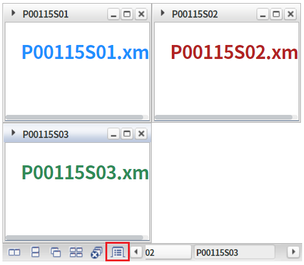
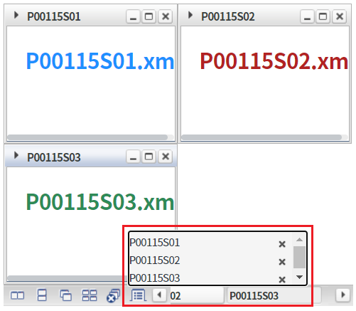
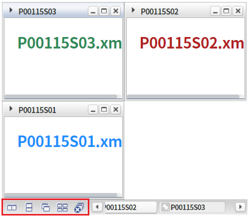
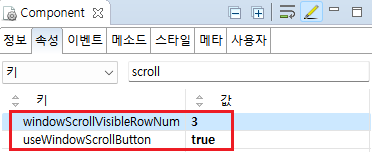

WindowContainer의 'useWindowScrollButton' 속성을 'true'로 설정하여, 툴바 영역에 '윈도우 목록 보기' 아이콘을 표시한 예제입니다.
툴바에 윈도우 목록 아이콘 출력하기
기본 동작
예제 영역 '툴바에 윈도우 목록 아이콘 출력하기'에서 테스트합니다.1
STEP 1: 툴바 영역의 "윈도우 목록" 아이콘을 확인합니다.
Image 1.브라우저(Chrome) 실행 예시 - 윈도우 목록 아이콘

2
STEP 2: 윈도우 목록 아이콘을 클릭합니다.
윈도우 목록이 콤보 형태로 출력됩니다.
Image 2.브라우저(Chrome) 실행 예시 - 윈도우 목록 콤보

예제 영역 '기본 동작'에서 테스트합니다.1
윈도우 툴바 영역을 확인합니다.
"윈도우 목록" 아이콘이 출력되지 않은 것을 확인합니다.
Image 3.브라우저(Chrome) 실행 예시 - 툴바 영역

윈도우를 생성(추가)하는 스크립트는 생략되었습니다.
1
WindowContainer의 속성을 정의합니다.
[필수] useWindowScrollButton="true"
현재 열려있는 윈도우 목록을 표시할 수 있는 버튼을 툴바에 추가.
[선택] windowScrollVisibleRowNum="3"
[default :"5"] 윈도우 목록 버튼을 툴바에 표시할 경우(useWindowScrollButton="true"), 목록에 표시할 항목 수를 설정.
Image 4.웹스퀘어 스튜디오의 Component View 예시

Example 1.Source
<!-- windowContainer 의 소스 본문 예시 --> <w2:windowContainer useWindowScrollButton="true" windowScrollVisibleRowNum="3"> <!-- 중략 --> </w2:windowContainer>
useWindowScrollButton
windowScrollVisibleRowNum